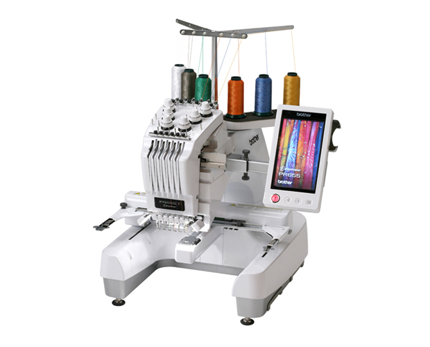
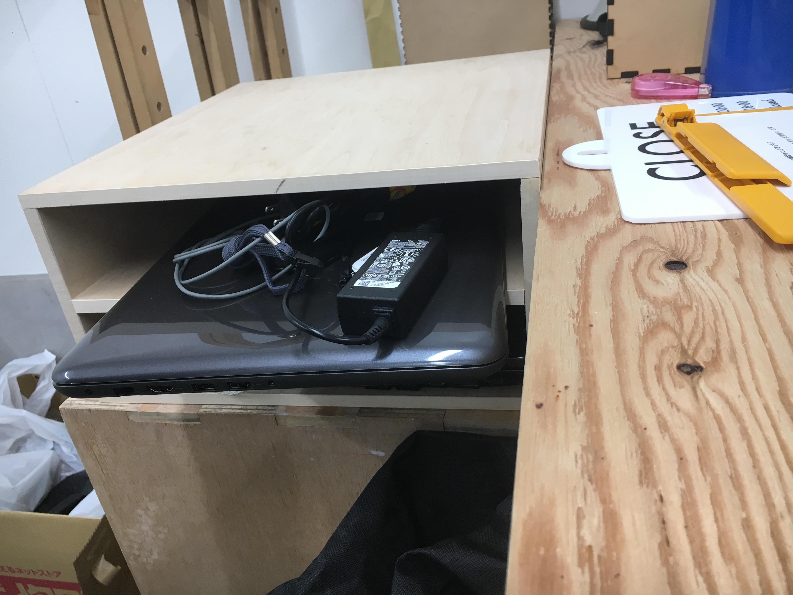
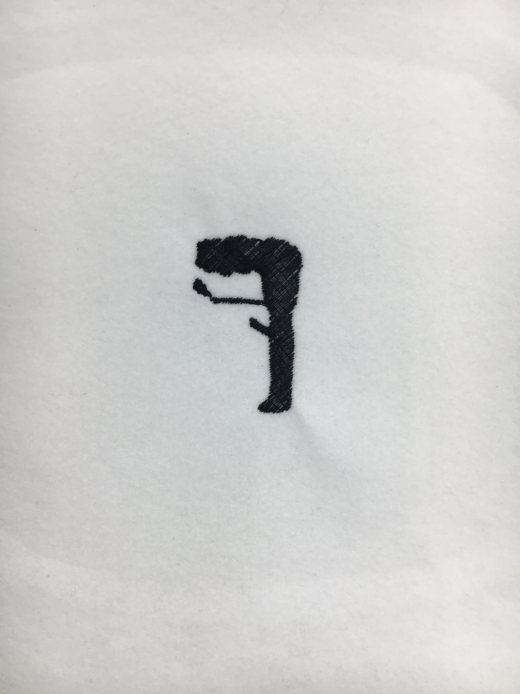

Embroidery(刺繍ミシン)
刺繍ミシンでできること
描画ソフトで作成した画像を元に刺しゅうができる
刺しゅうPRO10でデータを作成し刺しゅうができる
brother PR655（今回使ったミシン）

購入希望の方の為に購入できるサイトを貼っておきます
84万するのでよく考えてからご購入してください
PR655 | 業務用刺しゅうミシン | ブラザー
開封動画
制作工程
⚠︎刺繍ミシンを使う際に、教えてくださったこうへいさんが作って頂いた
fabbleを参考にしていきます。
①Illustratorで刺繍したいデザインを描く。(単色で)

②保存する
⚠︎ファイル→書き出し→書き出し形式→JPG（高、標準、低どれでも可）で必ず保存

③USBを用意して、自分のpcにあるIllustratorのデザインをusbに取り入れる
ウルトラのオフィスにある刺しゅうPRO10用PCを借りる
PCを起動させ「gakusei」とパスワードを打ち込む
作成済みデータが入ったUSBをPCに挿す
刺繍したい画像をデスクトップに移動

④刺刺しゅうプロを開きデータをインポートする
ソフトウェアキーUSBをPCにさして刺しゅうプロを開く
イラストや写真から作るを選択し
次の画面で「オートパンチ」を選択し次へ
�（写真はデスクトップへ）
⑤オートパンチ�（りんごのマーク）の設定
範囲の設定は何も触らずに次へ
範囲の確認／画像のサイズと位置の変更も何も触らずに次へ（次へ何もせず2回）
（「ページサイズに合わせる」を選択すると画像が大きく乱れる）
オートパンチの設定では使わない色をクリックし削除（×が表示される）
縫わない部分は網掛け表示されるので確認
確認ができたら完了をクリック。縫い模様の入った刺繍データーが作成される
⑥縫い方の設定
刺繍データをクリックして選択
メニューバー＞図形＞ぬい設定より目的の縫い方を選択
縫いたい部分(左縦列)によって縫い方を変えれる
⑦刺繍データのサイズ変更
刺繍データをクリックして選択
ホーム>オプション編集>サイズ変更をクリック
目的のサイズを入力しプレビューをクリック
⑧刺繍データの保存
刺繍データを刺繍ミシンに読み込ませるにはUSBを使用する
使用するUSBをPCにさす
画面左上の花のアイコンをクリック
名前をつけて保存をクリックし使用するUSBに保存する
⑨素材の準備
配布されたフェルトを刺繍枠にフェルトを固定
ピンと張ってるぐらいが丁度いい。
金具をしめる道具は小さく使いにくい為注意
（デザインのサイズによって刺繍枠のサイズを変える）

⑩刺繍ミシンにデータを読み込む
電源を入れてokをクリック、右一番上にusbを挿す
画面のUSBマークをタッチペンでタッチ
作成した刺繍データをタッチし画面右下のセットをタッチ
編集画面で位置や向きを調整したら編集終了をタッチ
次の画面で最終確認。よければ縫製をタッチ
縫製画面では使用する糸を選択する。選択できたら左下赤いロックをタッチ
緑に光るスタートボタンを押して刺繍スタート
ワンポイントアドバイス
・ウルトラのpc使うときにshift＋マウス左クリック長押しすると
画像が共に動く
・自分に好みの縫い方を選ぼう（デザインの問題）
完成

反省点
・完成品が３〜５cmのサイズになるとは思わず、１０cmぐらいだと思いデザインした為
思ったより小さくできたのと、煙のところとリーゼントが近かったので刺繍時に糸が巻き込まれる可能性が高かった。
→デザインとの間を余裕持って描くことが必要
・縫い目が細かいと糸と糸の間が見えるので少しちゃっちく見える
→好みによって縫い方を変えたり、部分ごとに縫い方を変えたりする